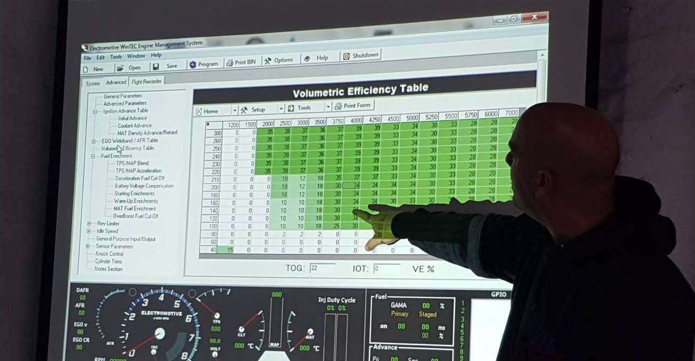

900
Cursos dictados.

Debido a la falta de información relacionada con los motores de alto rendimiento con inyección programable, identificamos la necesidad de capacitación en esta área, partiendo de la premisa de que para que el mercado crezca, es necesaria una instrucción de calidad. En los últimos años de trabajo en pistas dentro y fuera de Argentina, Damian Caia junto con equipos que utilizan equipos Racetec aprendieron y se desarrollaron mucho en las competencias. Consciente de que la sinergia del mercado es la mejor manera de crecer en alto desempeño, Damian creó DC TUNER, con variedad de cursos para compartir el conocimiento desarrollado con entusiastas y profesionales. En la formación de DC TUNER existe la preocupación de brindar a los estudiantes contenidos de alto nivel donde sea que se imparta el curso, es decir, buscamos los medios necesarios para estandarizar la calidad en todas las localidades. Ahora, con la posibilidad de Educación a Distancia, podemos ir más allá, atendiendo a nuestros alumnos en su propia casa, o presencialmente en nuestra academia. Y fue con este objetivo que creamos DC TUNER ACADEMY, brindando una formación con la misma calidad y con la posibilidad de atenderte estés donde estés.
Cursos dictados.
Alumnos nos eligieron.
Clientes conformes.
Mi experiencia se basa en mas de 15 años desarrollando, instalando y mapeando autos estándar y de competición. Mi meta, ser quien tenga que ser, para que cada uno sea feliz con su juguete.
